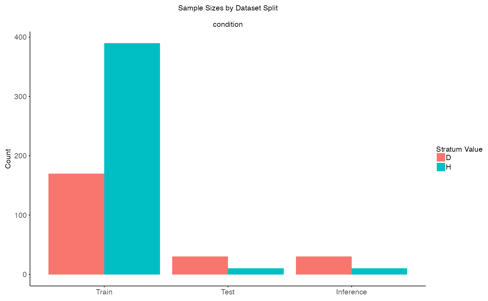
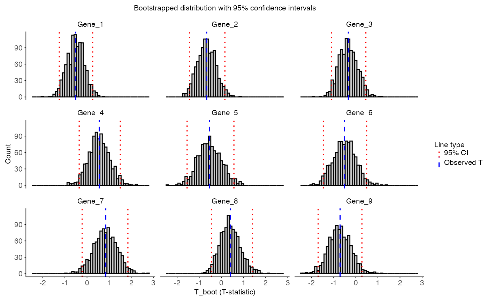
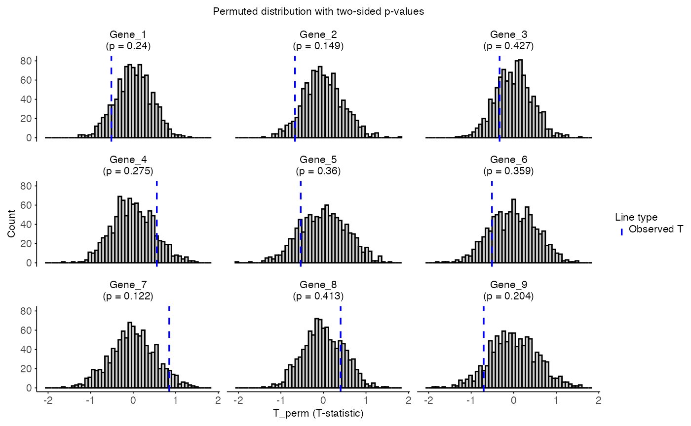

This tutorial shows key steps and functions in the process of generating permutation based interaction results.
Data setup
In this example we can see a common scenario where EUR ancestry has a larger sample size than another (AFR).
library(CrossAncestryGenPhen)
library(ggplot2)
#> Warning: package 'ggplot2' was built under R version 4.3.3
# Seed for reproducibility
set.seed(42)
# Simulate example data
p <- 100 # Number of genes
n_EUR <- 600
n_AFR <- 40
# Expression matrices for EUR and AFR ancestries
X <- matrix(rnorm(n_EUR * p), nrow = n_EUR, ncol = p)
Y <- matrix(rnorm(n_AFR * p), nrow = n_AFR, ncol = p)
colnames(X) <- colnames(Y) <- paste0("Gene_", seq_len(p))
# Metadata for EUR and AFR ancestries
# EUR: overrepresented compared to AFR
MX <- data.frame(
condition = factor(c(rep("H", 400), rep("D", 200))),
ancestry = "EUR"
)
# AFR: underrepresented compared to EUR
MY <- data.frame(
condition = factor(c(rep("H", 10), rep("D", 30))),
ancestry = "AFR"
)
# Visualize sample size imbalance
meta <- rbind(MX, MY)
# Plot
ggplot(meta, aes(x = ancestry, fill = condition)) +
geom_bar(position = "dodge", color = "black") +
labs(
title = "Condition Imbalance Across Ancestries",
x = "Ancestry",
y = "Sample Count",
fill = "Condition"
) 
Stratification step
In the next step we will create the stratified subset to account for sample size but also control for the condition imbalance in the underrepresented ancestry (AFR).
# Define column to stratify
stratify_cols <- c("condition")
# Split the data into stratified sets
split <- split_stratified_ancestry_sets(
X = X,
Y = Y,
MX = MX,
MY = MY,
stratify_cols = stratify_cols,
seed = 42
)
# Visulaize stratified sets
plot_stratified_sets(
x = split,
stratify_cols = stratify_cols
)
The output will contain train, test and
inference sets and additional information on used strata.
Each subset (train, test,
inference) contains a gene expression matrix
($X) and a metadata frame ($M).
# Output
str(split)
#> List of 4
#> $ train :List of 3
#> ..$ X : num [1:560, 1:100] 1.371 -0.565 0.363 0.633 0.404 ...
#> .. ..- attr(*, "dimnames")=List of 2
#> .. .. ..$ : NULL
#> .. .. ..$ : chr [1:100] "Gene_1" "Gene_2" "Gene_3" "Gene_4" ...
#> ..$ M :'data.frame': 560 obs. of 2 variables:
#> .. ..$ condition: Factor w/ 2 levels "D","H": 2 2 2 2 2 2 2 2 2 2 ...
#> .. ..$ ancestry : chr [1:560] "EUR" "EUR" "EUR" "EUR" ...
#> ..$ ids: chr [1:560] "1" "2" "3" "4" ...
#> $ test :List of 3
#> ..$ X : num [1:40, 1:100] 1.215 -1.097 1.113 -0.8 0.446 ...
#> .. ..- attr(*, "dimnames")=List of 2
#> .. .. ..$ : NULL
#> .. .. ..$ : chr [1:100] "Gene_1" "Gene_2" "Gene_3" "Gene_4" ...
#> ..$ M :'data.frame': 40 obs. of 2 variables:
#> .. ..$ condition: Factor w/ 2 levels "D","H": 2 2 2 2 2 2 2 2 2 2 ...
#> .. ..$ ancestry : chr [1:40] "EUR" "EUR" "EUR" "EUR" ...
#> ..$ ids: chr [1:40] "24" "136" "146" "158" ...
#> $ inference :List of 3
#> ..$ X : num [1:40, 1:100] 0.389 0.442 -0.533 -0.781 -0.124 ...
#> .. ..- attr(*, "dimnames")=List of 2
#> .. .. ..$ : NULL
#> .. .. ..$ : chr [1:100] "Gene_1" "Gene_2" "Gene_3" "Gene_4" ...
#> ..$ M :'data.frame': 40 obs. of 2 variables:
#> .. ..$ condition: Factor w/ 2 levels "D","H": 2 2 2 2 2 2 2 2 2 2 ...
#> .. ..$ ancestry : chr [1:40] "AFR" "AFR" "AFR" "AFR" ...
#> ..$ ids: chr [1:40] "1" "2" "3" "4" ...
#> $ strata_info:List of 3
#> ..$ usable : chr [1:2] "D" "H"
#> ..$ missing : chr(0)
#> ..$ insufficient: chr(0)Permutation interaction analysis
Next, we use the test and inference sets to
evaluate interaction effects between condition and ancestry using
permutation-based inference. The perm_diff_interaction()
function estimates differential interactions between groups using both
bootstrapping and permtuation.
# Define the ancestry column and the condition column
g_col <- "condition"
a_col <- "ancestry"
# Define the number of permutations
B <- 1000
result <- perm_diff_interaction(
X = split$test$X,
Y = split$inference$X,
MX = split$test$M,
MY = split$inference$M,
g_col = g_col,
a_col = a_col,
permute = TRUE, # Perform permutation
B = B, # Number of iterations (shared for both bootstrapping and permutation)
seed = 42,
check_convergence = TRUE
)Output
Under summary_stats the interaction results, including
the p-values and adjusted p-values for each gene are listed. The
function uses bootstrapping to estimate the confidence intervals and SE
for each interaction and permutation to calculate p-values. It uses the
same B for both bootstrapping and permutation, which is set
to 1000 in this example.
head(result$summary_stats, 10)
#> feature T_obs SE CI_lower CI_upper p_value p_adj
#> 1 Gene_1 -0.5130443 0.3923301 -1.2508662 0.2547914 0.240 0.8372549
#> 2 Gene_2 -0.6683108 0.4125705 -1.4404276 0.1595252 0.149 0.8372549
#> 3 Gene_3 -0.3320232 0.4179015 -1.0994486 0.4564010 0.427 0.8372549
#> 4 Gene_4 0.5558679 0.4792829 -0.3525281 1.5073401 0.275 0.8372549
#> 5 Gene_5 -0.5341650 0.5344263 -1.5502086 0.5675294 0.360 0.8372549
#> 6 Gene_6 -0.5112056 0.5125146 -1.4641899 0.4902113 0.359 0.8372549
#> 7 Gene_7 0.8474367 0.5291091 -0.2190532 1.8482184 0.122 0.8372549
#> 8 Gene_8 0.4034361 0.4632553 -0.4437222 1.4065911 0.413 0.8372549
#> 9 Gene_9 -0.7058754 0.5079581 -1.6996518 0.2799340 0.204 0.8372549
#> 10 Gene_10 0.6851216 0.5181549 -0.3723373 1.6788730 0.193 0.8372549More information about the statistics can be found in the
result object. The actual number of B used can
be found in result$B_used_boot and
result$B_used_perm, respectively.
result$B_used_boot
#> [1] 1000
result$B_used_perm
#> [1] 1000The actual values of the test statistics can be found in
result$T_boot and result$T_perm, respectively.
The distribution of the test statistics can be visualized using the
plot_T_distribution function. The plot shows the
distribution of bootstrapped test statistics for selected genes, with
dashed lines for observed values and dotted lines for 95% confidence
intervals.
plot_T_distribution(
x = result,
statistic = "T_boot",
title = "Bootstrapped distribution with 95% confidence intervals"
)
When having set permute = TRUE, the distribution of the
permuted test statistics can be visualized using the
plot_T_distribution function. This plot displays the
empirical null distribution from permutations. The dashed line indicates
the observed statistic. Facet titles include empirical two-sided
p-values.
plot_T_distribution(
x = result,
statistic = "T_perm",
title = "Permuted distribution with two-sided p-values"
)